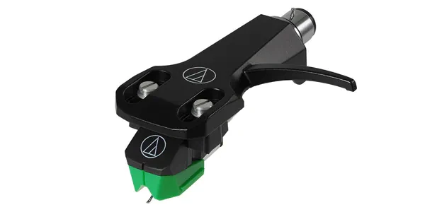

Audio-Technica AT-VM95E

A versatile VM95 cartridge with elliptical stylus and easy stylus upgrades.
Specifications
| Type | Dual Moving Magnet |
|---|---|
| Stylus profile | Bonded elliptical, 0.3 × 0.7 mil |
| Output voltage | 4.0 mV |
| Tracking force | 2.0 g |
| Load | 47 kΩ |
Highlights
- Strong value for money
- Wide choice of VM95-compatible styli
- Easy mounting thanks to threaded holes